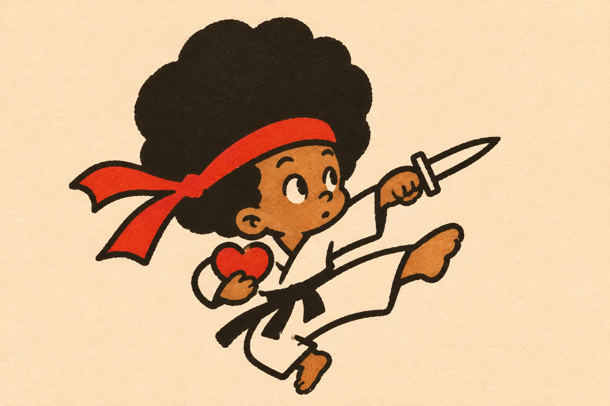

Independent creative studio · Georgia
Tangerine
We build brands.

TangerineUntitled (Orange)2026Pigment on everythingColour study
Freeman Globe
Identity motion study · 2026
The script holds perfectly still. Behind it, the world turns. Drawn live from Freeman’s own code, two colours, one bit per pixel.
A study · not yet approved by Freeman
The case study→Two films, 9:16 · 8 s loops
Face-on, the pendant is the mark. Edge-on, the whole signature becomes a single line.

Lil KC
Master drawing · 16 November 2026
Brave enough to confront the world, gentle enough to protect his heart.
In development
The character file→The studio